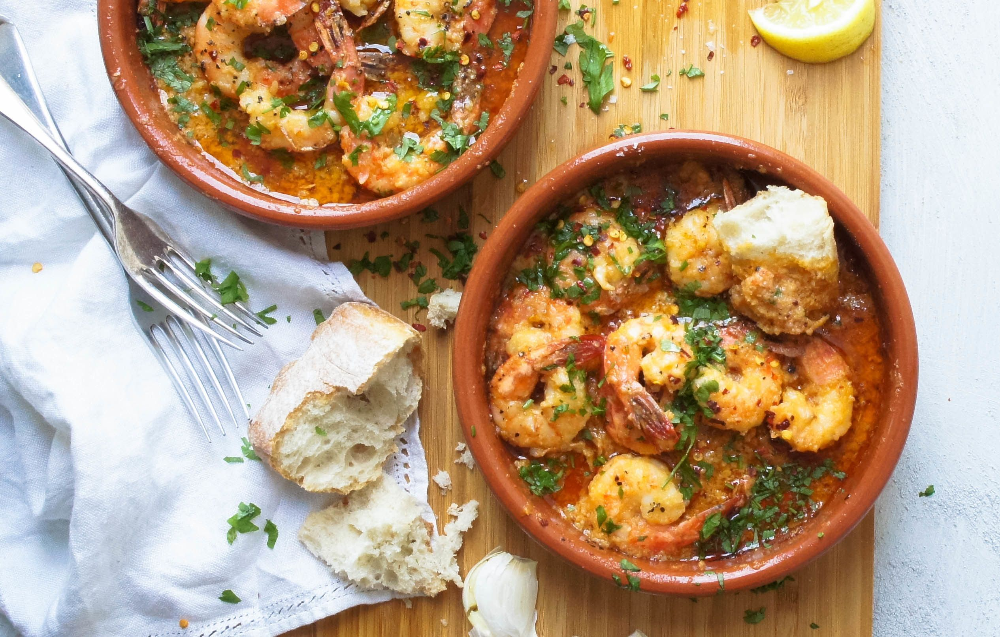

Shrimps in Olive oil and garlic

At La Casa del Abuelo, a tiny taberna in Madrid, gambas al ajillo (shrimp with garlic) are cooked in individual earthenware cazuelitas and served with plenty of bread to dip into the garlicky oil once the shrimp have been eaten. This dish can also be prepared in a skillet.
Ingredients
- 1 cup extra-virgin olive oil
- 4 garlic cloves (minced)
- 6 whole dried red chiles
- ¼ cup minced flat-leaf parsley
- 2 pounds shelled and deveined medium shrimp
- Salt
- Crusty bread (for serving)
Steps
- In a very large, deep skillet, heat the olive oil until shimmering.
- Add the garlic, chiles and parsley and cook over moderately high heat for 10 seconds, stirring. Add the shrimp and cook over high heat, stirring once, until they are pink and curled, 3 to 4 minutes.
- Season with salt and transfer to small bowls. Serve with crusty bread.
Enjoy!
Return to Main Page